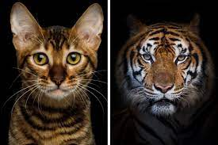

Back the main page
Cats
Housecats can run up to 30 mph over short distances
Cats are the only animals that can't taste sweetness
Their genetic makeup is 95% similar to the genetic makeup of a tiger
